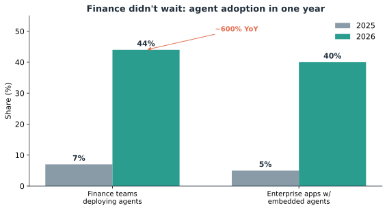
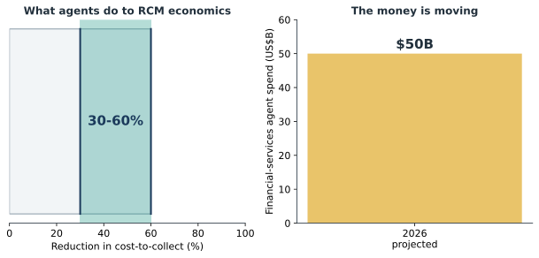

Edisi 2 — Kenapa finance memimpin adopsi AI
Seorang billing manager bilang ke aku dia udah nggak takut lagi sama antrean denial hari Senin, karena penyortiran pertama udah selesai waktu dia login. Sekarang, angka-angka di balik perasaan itu.

Headline buat leadership: sampai Q1 2026, sekitar 44% tim finance sudah men-deploy agentic AI — kenaikan sekitar 600% year over year (getaleph.com; aimagicx.com). Proyeksi belanja agent di financial services untuk 2026 ada di kisaran $50 miliar. Waktu hampir separuh peer group kamu udah bergerak dan kurva belanjanya kayak gitu, "tunggu dan lihat" diam-diam berubah jadi "ketinggalan."
Buat sistem rumah sakit, kasus paling tajam ada di revenue cycle. McKinsey memperkirakan otomasi agentic bisa memangkas cost-to-collect 30–60% (Gambar 2.2). Konkretnya: satu agent bisa menjalankan 3.000+ pengecekan status klaim per hari — kerja yang setara 5–8 staf full-time, atau sekitar $350 ribu per tahun — sementara tim kamu dialihkan ke kasus-kasus pengecualian yang beneran butuh manusia (solventum.com; healthcarefinancenews.com). Itu bukan sekadar pemangkasan; itu membangun ulang unit economics dari menagih apa yang jadi hak kita.

Sektornya udah "voting" lewat roadmap-nya sendiri. HFMA melaporkan sekitar 27% organisasi kesehatan men-deploy AI revenue-cycle secara skala penuh dan sekitar 53% masih piloting (hfma.org). Tambahkan proyeksi Gartner — ~40% aplikasi enterprise menyematkan agent di 2026, naik dari kurang dari 5% di 2025 (via Deloitte) — dan kapabilitasnya datang di dalam sistem yang udah kita lisensikan, bukan sebagai build khusus yang jauh di masa depan.
Kenapa finance secara spesifik? Karena pekerjaannya terstruktur, berbasis aturan, volumenya tinggi, dan bisa diaudit — dan itu persis yang dilakukan agent dengan baik dan yang bisa ditandatangani fungsi kontrol. Perbedaan yang jadi acuannya adalah benang merah kita: chatbot menjawab; agent bertindak. Bertindak itu kelihatan di cycle time, cost per task, dan clean-claim rate — metrik yang jadi ukuran leadership — dan itu persis kenapa finance, bukan fungsi yang lebih flashy, ada di depan.
Keberatan soal kontrol punya jawaban yang jelas. Tiap deployment menjaga gerbang human-in-the-loop — agent mengusulkan, satu orang yang ditunjuk menyetujui — dengan semua tindakan tercatat di bawah agent identity yang scoped buat audit. Kamu dapat throughput tanpa melepas pengawasan. Intinya: kurva adopsi, rentang penghematan RCM, dan pilot-pilot di sektor itu sendiri semuanya menunjuk ke arah yang sama. Edisi ini adalah evidence pack kamu; teruskan ke siapa pun yang pegang angkanya.
Sumber
- getaleph.com; aimagicx.com — ~44% tim finance deployed sampai Q1 2026 (~600% YoY); ~$50 miliar proyeksi belanja agent FS, 2026.
- McKinsey — penurunan 30–60% cost-to-collect untuk RCM kesehatan.
- solventum.com; healthcarefinancenews.com — satu agent ≈ 3.000+ pengecekan status klaim/hari ≈ 5–8 FTE (~$350 ribu/tahun).
- hfma.org — ~27% deploying RCM AI skala penuh, ~53% piloting.
- Gartner via Deloitte — ~40% aplikasi enterprise menyematkan agent di 2026 vs. <5% di 2025.